Compete Clean
A retro 2D platformer where you play an anti-doping agent collecting evidence against a suspected athlete. Beat the clock across three levels while dodging javelins, track spikes, sand pits, and wind. The more evidence you bring back, the better your chance of justice.

A light game about a heavy topic
Doping is a long-running problem in athletics, and catching cheaters is much harder than it sounds. We wanted players to feel some of that difficulty while still having a fun, approachable game. Our art direction borrows the friendly 8-bit look of Kirby's Adventure, and our charge jump is a nod to Super Mario Bros. 2.
You never get told outright that the athlete is guilty. That's the mystery the player has to resolve by collecting enough blood samples across three escalating levels.
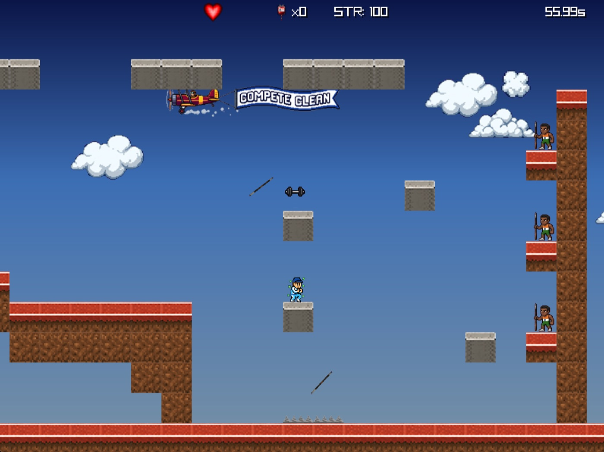
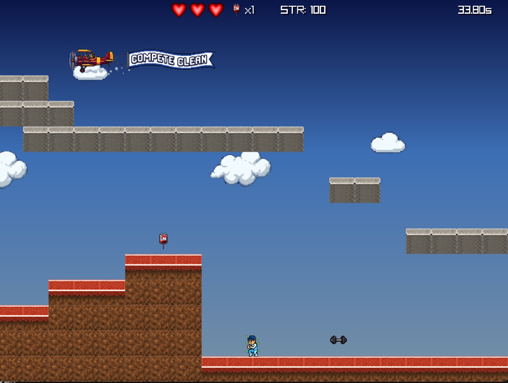
See it in motion
Video not loading? Open it on Google Drive ↗
Tools and obstacles
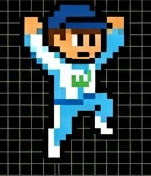
JumpSpace to hop over hazards or onto higher platforms.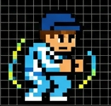
Charge jumpHold down to charge a bigger jump. The animation speed scales with charge, so the sprite itself shows how strong the jump will be.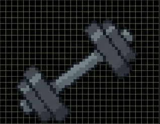
WeightsCollect them to raise your maximum charge jump. That's progression you can feel.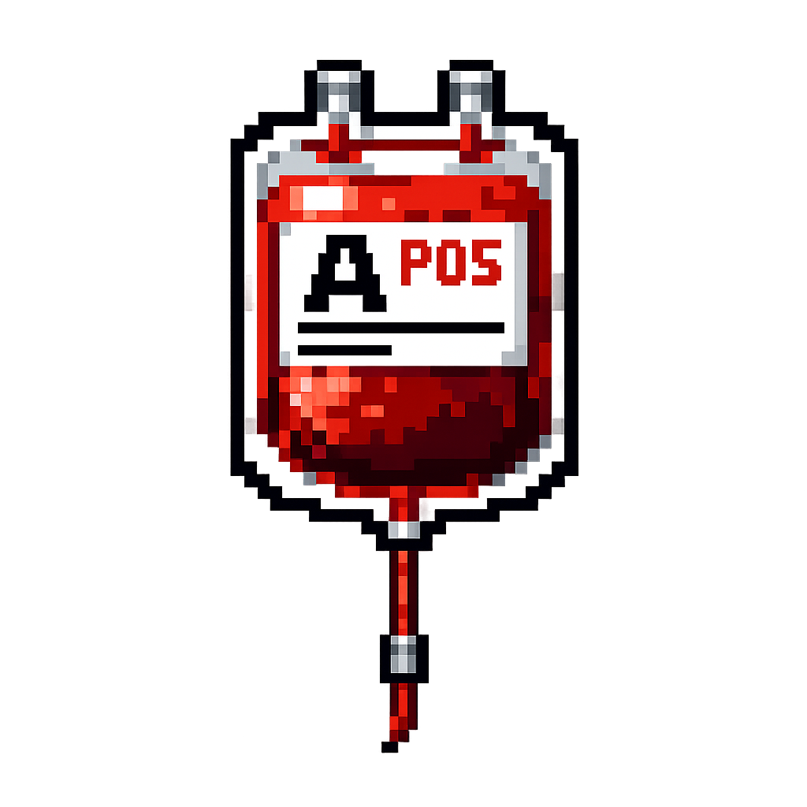
Blood bagsThe evidence. The more you collect, the better the odds the final test succeeds.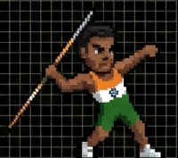
Javelin throwersJavelins fly in a real arc instead of a straight line, so you read the throw and time your move.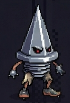
Track spikesStatic hazards that punish careless landings.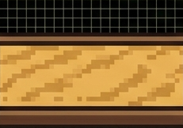
Sand pitsSlow movement and cut jump height, a nice combo with timed hazards.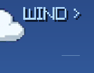
WindEach level has a 1-in-5 chance of wind with random direction and strength, so no two runs feel the same.
Letting the gameplay tell the story
Instead of telling the story through cutscenes, we planned it with two narrative lenses so that the act of playing carries the meaning:
Action codes
Dodging javelins, clearing spikes, and making precise jumps push the story forward. Each obstacle stands for the institutional resistance investigators face, and intensity rises each level to build narrative escalation.
Enigma codes
The game opens with a question about an athlete's integrity, not an accusation. Each piece of evidence brings you closer to an answer, but the mystery only resolves at the end.
A cheerful, retro surface over a serious theme. The contrast is the point.
Designing for playtests
We built a debug mode early on. It shows player, javelin, and spike hitboxes, live jump velocity, animation frame, and grounded state, and pressing N skips to the next level. It made tuning difficulty and testing later levels quick, which is the same instinct behind good research tooling: make the thing you need to observe visible.
Small systems that add feel
- Javelin arcs use projectile geometry from Python's math library, so throws feel physical.
- Camera shake and i-frames. Taking damage shakes the camera by a random x/y offset for a set duration. The player then flickers during a short invincibility window.
- Wind system. A timed interval re-rolls direction and strength, with 18 particles drawn to show it.
- Data-driven levels. Three levels are authored as CSV tile maps, so we could iterate on layouts without touching code.
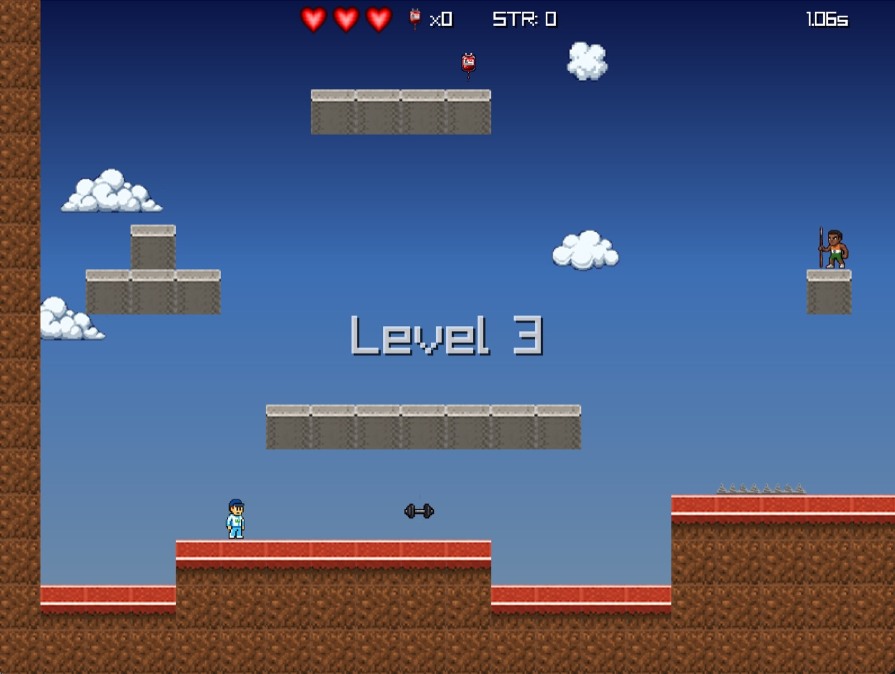
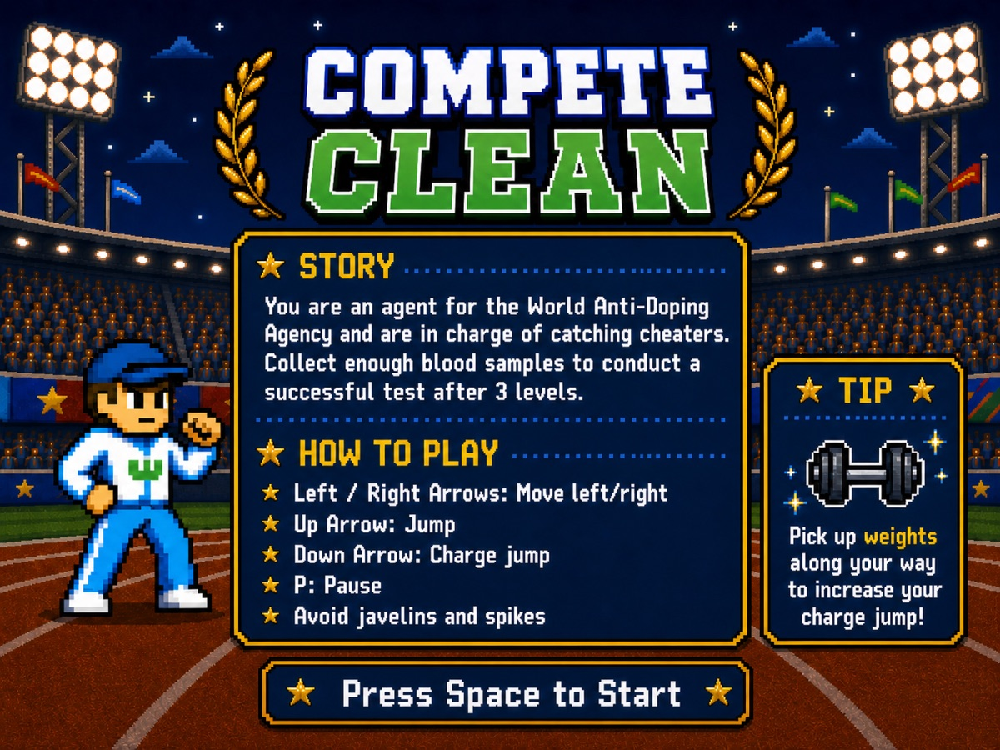
An AI-assisted art pipeline
Neither of us is a pixel artist, so we generated sprite sheets with Gemini and screens with ChatGPT, then edited them by hand to match our style. Feeding the main sprite sheet back into later prompts kept the look consistent across the game. We kept a dated roadmap for every work session and documented all third-party music and sound credits in the design doc.
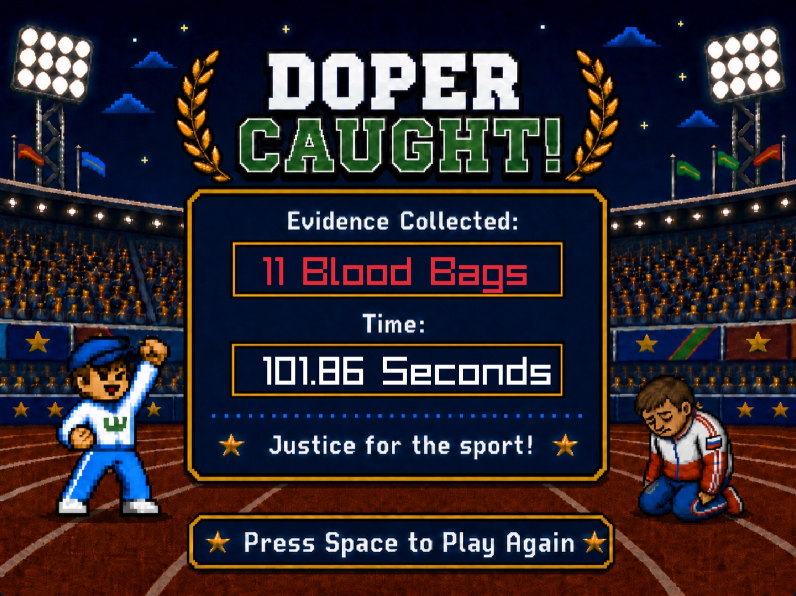